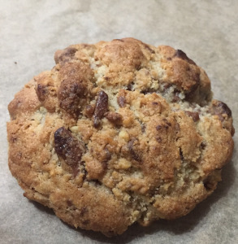

Cookies
This recipe makes about 6 cookies.

Ingredients
- 150g plain flour
- 100g self-raising flour
- 2g salt
- 5g salt
- 1g bicarbonate of soda
- 120g unsalted butter
- 1 egg
- 200g milk chocolate
- 50g walnuts
- 80g white sugar
- 80g soft light brown sugar
Method
- Roast the walnuts at 190 C (170 C fan)for 5 minutes. Allow to cool fully, and chop into small pieces. Chop the cholcate into small pieces as well, and set aside.
- Mix your cold, cubed butter in a stand mixer for about 10-20 seconds, to break up the pieces a bit
- Add the white & brown sugar and combine with the butter for 30-45 seconds until the butter has broken down into small lumps. Do not overdo this - you want lumps of butter in there!
- Mix in the walnuts and chocolate, for about 15 seconds, just enough to disperse in the mixture.
- Add the flour, salt, baking powder & bicarbonate of soda. Mix for a short while until you get a sandy mixture with a few small lumps of butter.
- Mix in the beaten egg, and allow it to combine in the mixture. It's important that you let the mixture remain as a pebbly mixture, and don't allow it to form into one cohesive dough. One it starts forming little pebbles, stop mixing.
- Measure out 125g of mixture, and form into a ball. Don't overwork the ball - make sure the sandy/pebbly mixture is compacted together and holds together
- Freeze the dough balls for at least 2 hours, or ideally, overniht. Or even keep them in the freezer, ready for when you want delicious cookies.
- Bake the cookies on a lined baking sheet at 210 C (190 C fan) for 15-16 minutes
These cookies are best enjoyed after they've had about half an hour to cool down a little bit. They should be hard on the outside, with a soft, underbaked texture in the middle.
Enjoy
Back to the Recipe Repository